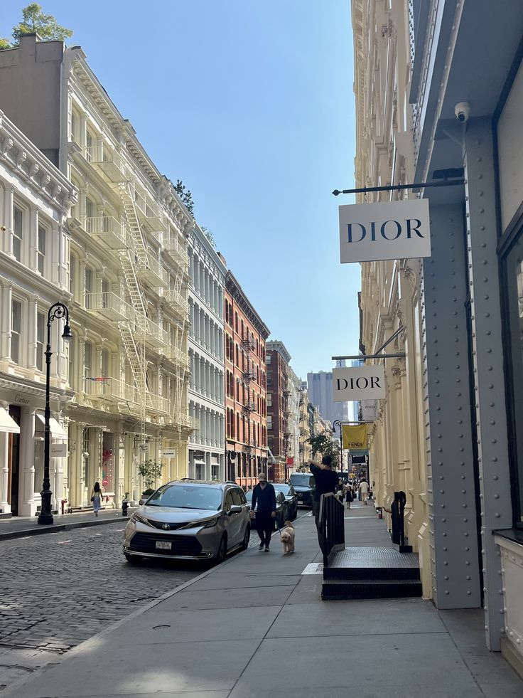
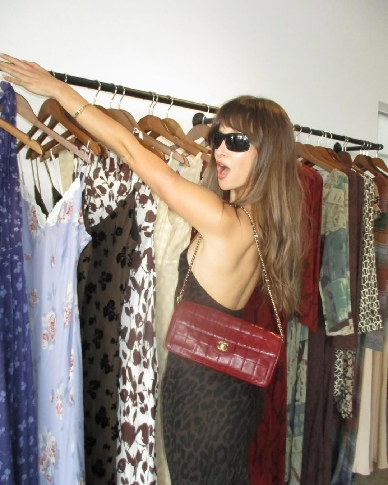

SOHO
Calles llenas de boutiques, marcas de diseño y tiendas que combinan moda, arte y arquitectura.
Nueva York es mucho más que una capital de la moda. Sus calles son una pasarela donde conviven tendencias, culturas y estilos diferentes. Desde las grandes marcas hasta las tiendas independientes, cada barrio tiene una identidad propia.


Nueva York es un punto de encuentro para quienes buscan prendas únicas, nuevas formas de expresión y alternativas a la moda convencional.
Tiendas de segunda mano, prendas de otras décadas y piezas únicas con historia.
Diseñadores emergentes y marcas locales que proponen nuevas formas de vestir.
Propuestas que promueven la reutilización, el consumo consciente y una moda más responsable.
Un recorrido por las tendencias que marcaron la identidad de Nueva York.
La cultura punk y el estilo urbano transforman las calles de Nueva York.
El hip-hop, el arte callejero y la moda deportiva definen nuevas tendencias.
El minimalismo y el streetwear ganan protagonismo en la ciudad.
La moda combina influencias vintage, diversidad cultural y nuevas formas de expresión.
Elegí ropa cómoda para recorrer la ciudad y adaptá tus looks a la estación del año. En Nueva York, el estilo también está en cómo combinás las prendas.
Explorá SoHo para descubrir boutiques, Lower East Side para encontrar prendas vintage y Fifth Avenue para conocer las grandes marcas.
Visitá mercados de diseño, ferias independientes y tiendas de segunda mano. Muchas veces, las mejores experiencias están fuera de los circuitos comerciales tradicionales.